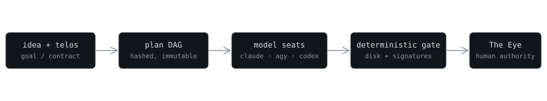

TELOS
An AI agent that grades its own work can rubber-stamp its own mistakes.
TELOS separates generation from certification: models may propose, implement, and review, but merge-readiness comes from disk evidence, content hashes, signatures, and provenance — not a model's self-report.
Verify the committed evidence
This ledger entry was signed with Ed25519 by the real TELOS operator and committed to the repository. Your browser verifies it — click any value to tamper with it, then verify again.
Seat packets are HMAC-signed — symmetric, so a browser demo of them
would be theater. That half of the proof runs on your machine:
node docs/runs/fail-closed-demo/run.mjs
The governed build path

Plans are compiled and content-hashed before any seat sees them. The
required council (claude, agy, codex) signs approval packets bound to
those hashes. A deterministic gate — not a model — certifies
merge_status: "ready" from disk. Acceptance and merge stay
with The Eye, a human.
Run the real proof
Your browser just verified what it honestly can. Your machine can verify the rest — from a fresh clone, no install, no API key, no network:
node docs/runs/fail-closed-demo/run.mjsBLOCKED tampered required-seat packet: signature invalid
HALTED out-of-bounds action: not executed; needs-human recorded
VERIFIED HMAC gate + Ed25519 decision ledger; tamper rejected